Six observatories went live in a single sol, and between them the city now listens from 600-metre radio waves down to picometre gamma rays. Five of them are instruments for light. The sixth is the one that finally looks the other way — down.
The city already had eyes. What it did not have was a spectrum — a set of detectors chosen so that the gaps between them are deliberate rather than accidental.
Before this round the city's detector family was a scatter of well-built points: a visible CIS camera, two lidar lines, a Ka-band relay dish, a millimetre-wave TES array, an X-ray CT bench. Each was excellent and none of them talked to the others about wavelength. Six design sessions ran in parallel to close that, each producing its own design book, and the result is a chain that runs from 600 m to 2.4 pm — 14.4 orders of magnitude, which everyone rounds to fifteen decades.
The chart below is the whole argument on one axis. Violet bars are the six new stations. Grey ticks are the instruments the city already had. The two dashed boxes are the honest part: the far-infrared and the EUV/soft-X-ray are still empty, and nothing in this round pretends otherwise.
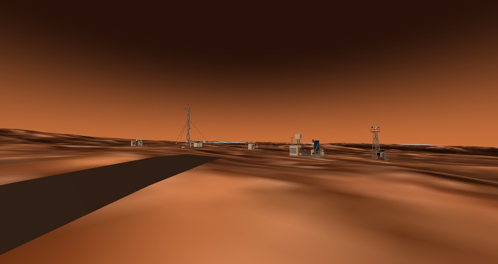
Each station exists because a specific physical argument said the band was worth the hardware. Here is the argument, one station at a time.
Germanium is opaque to everything the eye can see — its 0.66 eV bandgap swallows the whole visible range — and transparent from 2 to 16 µm. So the objective looks like a disc of polished coal and works perfectly. There is no alternative: BK7 and fused silica go opaque past 2.7 and 4 µm, which is why every thermal camera ever built has a black lens.
The pixel is a suspended SiN/VOx membrane held by two legs 0.35 µm wide, and the entire design is one trade: thinner legs mean lower thermal conductance and better sensitivity, but a slower pixel and a more fragile process. The feasible window closes at NETD 47.3 mK with a 9.45 ms time constant — comfortably inside the 30 Hz frame budget, with 21% margin after a 3-D FEM took the honest number over the lumped one.
Because a microbolometer measures its own temperature rise, it needs stabilisation but not cryogenics: a single-stage thermoelectric cooler holding 288 K ± 10 mK costs 0.33 W, where the mercury-cadmium-telluride alternative would need 51× that to reach 77 K, plus a Stirling machine with moving parts. On Mars that trade is not close.
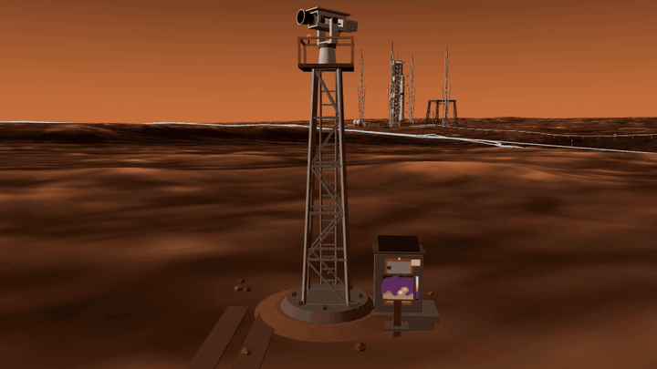
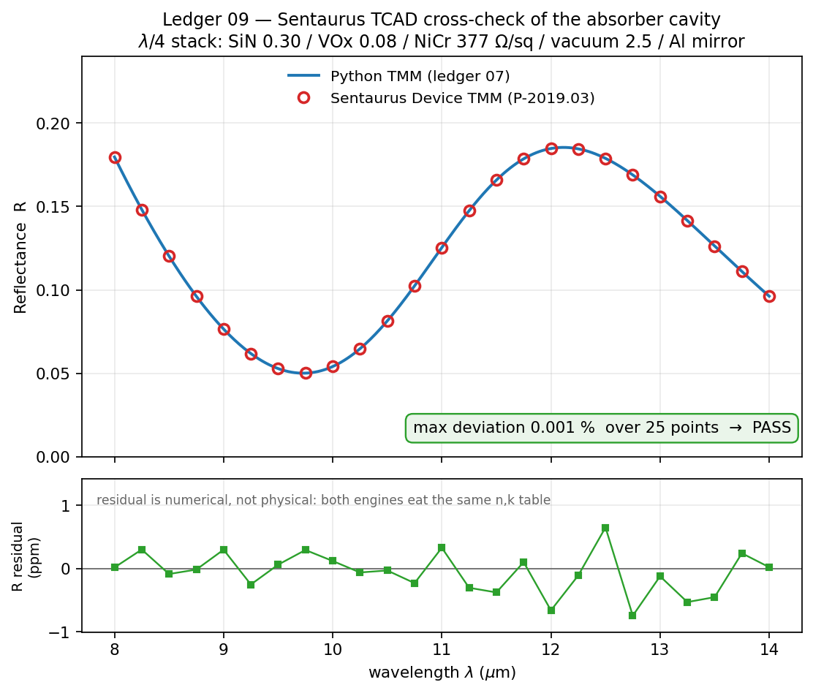
The station has no shutter, and that is a decision, not an omission. Pixel voltage is 258× more sensitive to the focal plane's own temperature than to the scene, which is why thermal cameras carry shutters at all. Here the thermoelectric cooler, on-chip blind rows and the pan itself replace it — a shutter would be the first moving part that dust and cold kill.
Mars has no ozone layer worth the name, so UV-C reaches the ground — the term that dominates EVA skin dose had, until now, no instrument watching it. The detector is grown rather than bought: aluminium fraction sets the cutoff, and Al₀.₄₅Ga₀.₅₅N cuts off at 278.8 nm, which is solar-blind by construction. A back-illuminated PIN with an Al₀.₆₀ window layer becomes an intrinsic 255–279 nm bandpass before any filter is fitted.
Sentaurus TCAD puts the responsivity at 0.117 A/W at 270 nm (53.7% external quantum efficiency), landing inside the 0.10–0.15 A/W literature gate for this device class. The rejection is the point: 585:1 at 310 nm and better than 10⁷ at 365 nm, from the material alone.
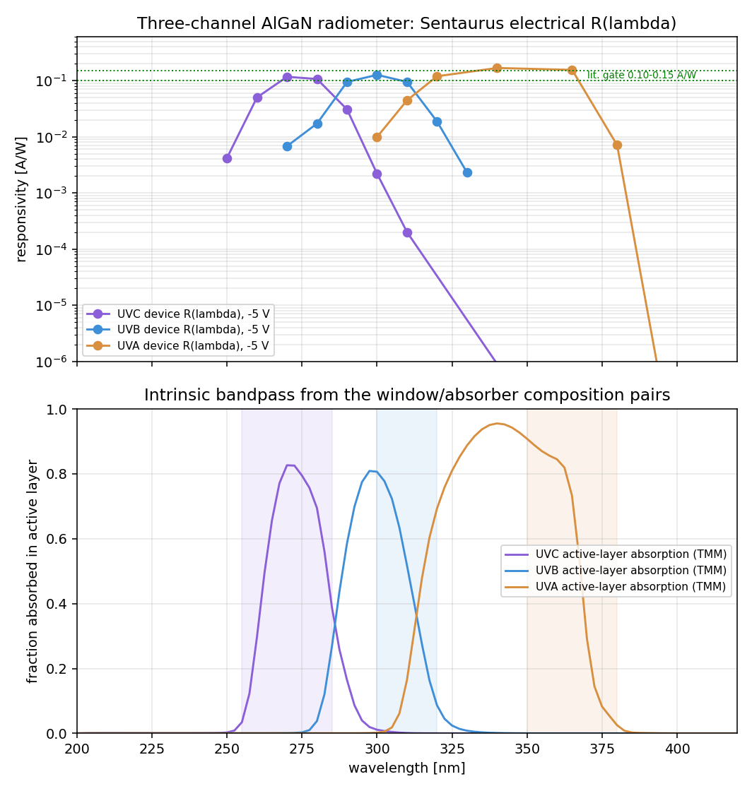
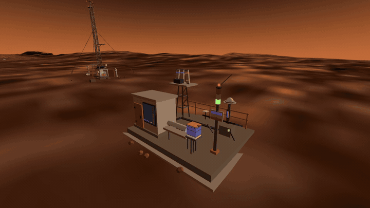
The prettiest result is free calibration. Phobos transits the Sun every few days, and because it occults only the direct beam it drops the signal by 12.8–26.2% without touching the diffuse part — which reads out the direct/diffuse split the cosine correction needs. An orbital mechanic hands the radiometer its hardest calibration constant, for nothing, on a schedule.
Mars has about a thousandth of Earth's water column, which sounds like a reason not to try. Two things rescue it. First, at 6 mbar the 183.31 GHz line is pressure-broadened to only 37 MHz — 81× narrower than at sea level — so the same molecules are packed into a proportionally narrower band and the peak cross-section rises to match. Second, the background is a 0.4 K sky.
The result is that 10 precipitable microns of water read out to 0.45% in one second, and the frequency offset from line centre acts as an altitude knob: line centre belongs to the upper layers, the wings to the lower ones. A singular-value decomposition of the noise-normalised Jacobian gives 3.63 degrees of freedom — a column plus three coarse layers, stated as such rather than dressed up as a profile.
There is a deeper reason Mars is a good place for this. CO₂ has no permanent electric dipole, so a 95% CO₂ atmosphere has no rotational spectrum at all. Earth's microwave window is combed by oxygen at 60 and 118 GHz; Mars deletes the comb and leaves water standing alone on a clean stage. The thin dry air that makes the water column tiny is the same air that makes it easy to see.
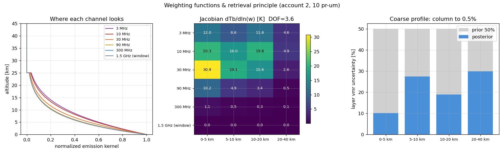
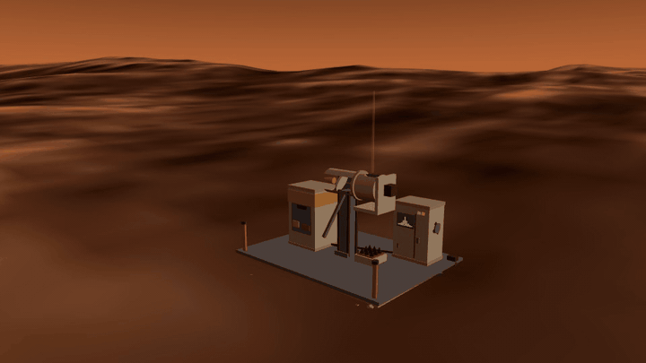
Dust is transparent at 183 GHz: a storm that takes the optical channels to τ = 5 leaves this one at τ ≈ 10⁻³. When the weather station goes blind, the radiometer takes over the weather watch — the two stations cite each other's cards in both directions.
Water ice has a diagnostic absorption at 1.5 µm and CO₂ ice at 1.435 µm, both sitting on the high-quantum-efficiency plateau of an InGaAs array — which is the whole reason this particular sensor hunts water. A five-position filter wheel measures the band depth against interpolated continuum, and the ledger puts the detection floor at 2.1 wt% ice at 200 µm grain size. Its first job is picking drill sites for the water well.
At night the same camera turns over and watches the 1.27 µm oxygen airglow, where the cooling matters absolutely: at 0.05 megarayleigh the cooled array reaches SNR 319 in a 60 s budget, while an uncooled InGaAs detector saturates on its own dark current and tops out at SNR 3.8. The long-exposure mode does not merely degrade without cooling — it does not exist.
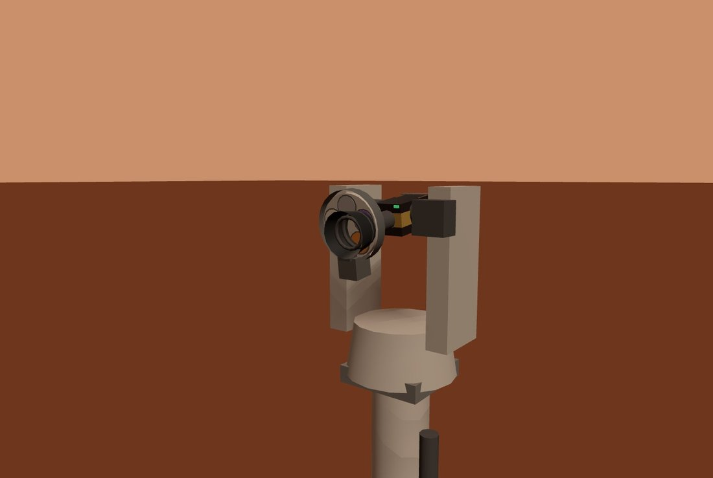
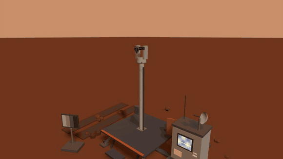
Mars runs this camera's thermal design backwards. On Earth the problem is getting the focal plane down to −40 °C. Here the night equilibrium is −74.4 °C at zero watts, and holding the specified −40 °C costs 5.5 W of heating. The cold that makes the frozen specification unreachable in a lab is free outdoors.
Below about 10 MHz, Earth's ionosphere reflects everything, and whatever leaks through is buried under shortwave broadcasting. There is no site on Earth — none, at any altitude, at any hour — where this band is observable from the ground. On Mars the ionospheric cutoff sits at 4.0 MHz at noon and falls to 0.63 MHz at night, so 97% of the window simply opens after dark.
The engineering is counterintuitive in the best way. The Galactic background is 2.2×10⁷ K at 0.5 MHz, so an electrically-short dipole with 0.7% efficiency loses nothing — the antenna is a probe of a noise field it cannot help but dominate. The front end is allowed to be bad. What it is not allowed to be is far away: a 5 m dipole at 1 MHz has Q ≈ 1.6×10⁵, nothing matches it, and the working circuit is a capacitive voltage probe whose amplifier must sit at the terminals. Moving it 3 m down the mast doubles the loss.
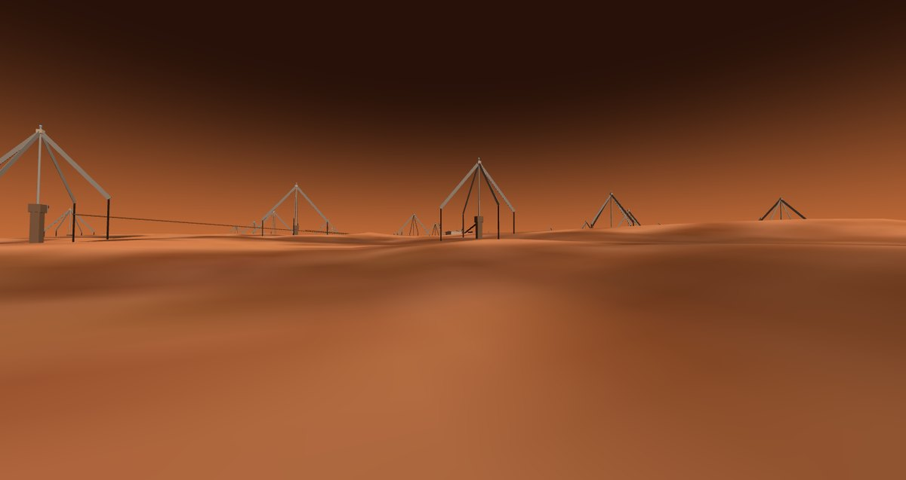
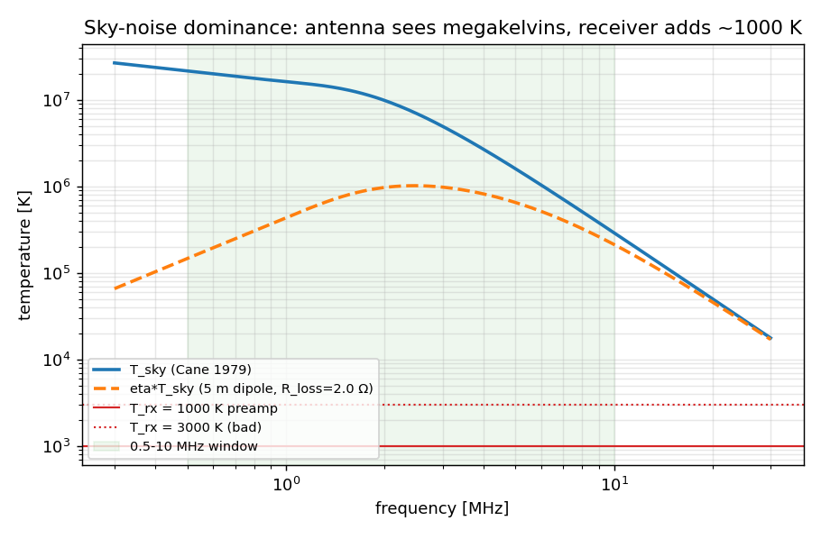
The array pays rent. Emission at the local plasma frequency makes frequency a proxy for distance from the Sun, so the band watches the 2–11 R☉ shell where shocks accelerate protons. Fitting a burst's drift track gives shock speed to ±5%, and light beats protons to Mars by 27 to 105 minutes depending on energy — the radio array hands the radiation station's alarm tower a number instead of a flag.
Five stations argue about wavelength. The sixth changes the subject.
Every instrument above is a way of counting photons. sci-seis-01 is the city's only line that looks down, and it is on this page precisely because it does not belong on the axis — a spectrum net is defined as much by the channel that isn't electromagnetic as by the ones that are.
It also gets something free that no photon instrument does. A gravity-restored pendulum has a period proportional to 1/√g, so the same spring and the same mass that give 0.60 s on Earth give 2.53 s on Mars — lower gravity buys period, and period buys sensitivity. This is the quantitative reason InSight's very-broad-band sensor could never be fully tested before launch: on the bench it is a different, worse instrument.
The enemy is wind and the gift is night. Direct wind drag, ground compliance under pressure fluctuations and thermal residual are all daytime terms; when the convective boundary layer collapses in the evening the pressure fluctuations drop about fortyfold. The floor lands at 1.36×10⁻¹⁰ m/s²/√Hz at 0.5 Hz — matching InSight's measured 1–2×10⁻¹⁰ — and day-to-night is a factor of 179. The same local magnitude-1.5 quake arrives at SNR 5.5 at night and 0.03 by day.
The best part is who calibrates it. The launch pad fires on schedule every sol at 14:00 local, which is a repeating ground-force impulse at a known time from a known place — the loudest neighbour turns out to be the best calibration source in town. Stacking 50 launches gives arrival picks to 0.28 ms and resolves the shallow velocity structure to 0.05–0.07%, while re-measuring the path attenuation daily.
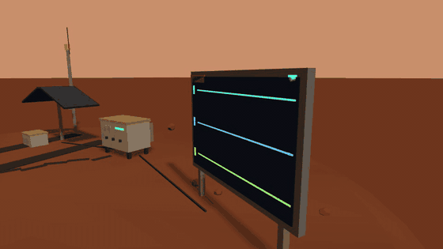
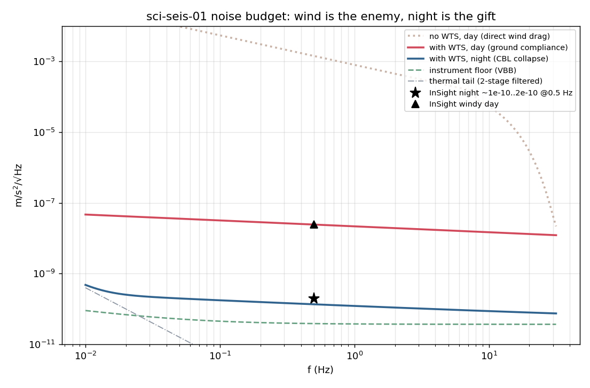
A seismometer that hears the city is usually a failure. This one files it as data: above 1 Hz the daytime record belongs to traffic and hoisting, so the station moonlights as urban-activity seismology — and it levies a vibration specification back on the city's round-the-clock machinery, ≤1.2×10⁻⁶ m/s/√Hz at 10 m. The instrument writes a rule for the town that hosts it.
Every headline number on this page, and the run that produced it. Six design books, all scripts project-relative.
| Claim | Value | Produced by |
|---|---|---|
| Spectral span | 600 m → 2.4 pm | composed from the six books' band definitions |
| IR — NETD @ f/1, 300 K, 30 Hz | 47.3 mK | mars-ir/sim/01_pixel_thermal.py |
| IR — pixel time constant, 3-D FEM | 9.45 ms | mars-ir/sim/pixel_fem.java (COMSOL 6.3) |
| IR — absorber band absorptance, f/1 cone | 0.883 | mars-ir/sim/07_absorber_tmm.py |
| IR — TCAD vs analytic TMM, 25 wavelengths | 0.001% | mars-ir/tcad/ir_abs_des.cmd (Sentaurus P-2019.03) |
| IR — bias vs thermal-runaway criterion | 44× | mars-ir/sim/08_electrothermal.py |
| IR — TEC vs 77 K cryocooler input power | 51:1 | mars-ir/sim/04_mars_specifics.py |
| UV — Al₀.₄₅Ga₀.₅₅N cutoff | 278.8 nm | mars-uv/sim/r1_bandgap.py |
| UV — responsivity at 270 nm | 0.117 A/W | mars-uv/tcad/uv_pin_sde.cmd (Sentaurus P-2019.03) |
| UV — out-of-band rejection at 365 nm | >10⁷ | mars-uv/tcad, chains 1–3 |
| UV — filter rejection actually required | OD 1.22 | mars-uv/sim/r6_filter.py |
| UV — cosine-response residual after self-correction | 1.25% | mars-uv/sim/r7_accuracy.py |
| UV — Phobos transit depth | 12.8–26.2% | mars-uv/sim/r8_events.py |
| THz — line half-width at Mars surface pressure | 37 MHz | mars-thz/sim/sim_lineshape.py |
| THz — retrieval degrees of freedom | 3.63 | mars-thz/sim/sim_weighting.py |
| THz — water-column error at 10 pr-µm, 1 s | 0.45% | mars-thz/sim/sim_sensitivity.py |
| THz — feed horn gain / return loss | 18.33 dBi / −28.0 dB | mars-thz/sim/hfss_horn_183.py (HFSS 2026.1) |
| THz — window-channel sky brightness | 0.470 K | mars-thz/sim/sim_window.py |
| THz — ground pickup, six decades narrowed to | 1.49 K | mars-thz/sim/sim_sidelobe.py |
| SWIR — minimum detectable ice abundance | 2.1 wt% | mars-swir/sim/01_filter_bands.py |
| SWIR — haze contrast gain (coarse storm: 1.194, no gain) | 2.07× | mars-swir/sim/02_dust_transmission.py |
| SWIR — 0.05 MR airglow, cooled vs uncooled | SNR 319 vs 3.8 | mars-swir/sim/03_airglow_snr.py |
| SWIR — passive night equilibrium | −74.4 °C | mars-swir/sim/04_tec_mars.py |
| Radio — Galactic sky temperature at 0.5 MHz | 2.2×10⁷ K | mars-radio/sim/01_sky_noise.py |
| Radio — ionospheric cutoff, noon → night | 4.0 → 0.63 MHz | mars-radio/sim/03_ionosphere.py |
| Radio — usable window, night (Earth: 0%) | 97% | mars-radio/sim/03_ionosphere.py |
| Radio — capacitive-divider loss at 0.5 MHz | 12% | mars-radio/sim/05_frontend.py |
| Radio — SEP warning, 100 → 10 MeV protons | 27–105 min | mars-radio/sim/07_burst_warning.py |
| Seis — VBB period, Mars vs same hardware on Earth | 2.53 s vs 0.60 s | mars-seis/sim/01_vbb_pendulum.py |
| Seis — night noise floor at 0.5 Hz | 1.36e-10 m/s²/√Hz | mars-seis/sim/02_noise_budget.py |
| Seis — day/night noise ratio | ×179 | mars-seis/sim/02_noise_budget.py |
| Seis — 50-launch stack pick precision | 0.28 ms | mars-seis/sim/04_launch_source.py |
| Seis — feedback flattening of the Q=200 resonance | 88.7 dB | mars-seis/sim/09_response_calib.py |
Six books running in parallel produced six different ways to be wrong. These are the ones worth reading.
"Short-wave infrared sees through dust" was the reason to build it. Running a full Mie calculation says otherwise for the main storm mode: 1–1.5 µm grains land squarely on the first Mie resonance at 1.6 µm, giving an opacity ratio of 1.194 — SWIR is very slightly worse than visible through a real dust storm. The genuine benefit survives in the sub-micron haze phase, where the ratio is 0.635 and contrast improves 2.07×. The station kept its job; the slogan on its card did not.
Ground pickup through the antenna's far sidelobes was bracketed between 10⁻⁵ K and 8.9 K —
useless in both directions, and honest enough to be stated that way rather than averaged. The
follow-up ledger found the missing quantity was never a tolerance but the mirror's surface
correlation length: at the same 27 µm rms, 0.5 mm correlation throws 7.33 K into the
far field and 5 mm throws 0.0002 K. That is a manufacturing-process specification —
diamond-turned, not polished — and it had never appeared in any requirement. The same pass
caught three numerical bugs with one gate: u = k·sin θ folds back past 90°, which
made the far field at 180° equal the main lobe and beam efficiency read 0.459 against a
claimed 0.95. Fixed, it reads 0.958.
The knowledge card promised cosine response better than 3% out to 70°. The measurement ledger says an isotropic diffuser gives 7.5%, reaching −16.8% at 70° — and because it is a systematic under-report, it errs in the unsafe direction on an instrument whose job is a radiation-dose warning. It is recoverable, but only because the station's own UV-A channel measures the dust opacity that sets the diffuse fraction, closing a three-channel self-correction loop down to 1.25% residual. The second withdrawal was simpler: a "2.3 GHz of headroom" claim belonged to the photodiode, while the transimpedance amplifier that actually reads it is pinned at 33.6 kHz. Fast events need a second low-gain channel — a design item, not free margin.
The absorber-cavity model returned R > 1, which is a gain medium made of aluminium and silicon nitride. The cause was a convention collision: the physics form n = n′ + ik had been fed into Macleod characteristic matrices, which require N = n − ik, so every lossy layer was amplifying. Three known-answer gates now run before any number prints — a bare aluminium mirror must return 0.983, an ideal Salisbury screen must absorb 1.000 at quarter-wave, and detuning to λ/8 must visibly break it. An independent Sentaurus TCAD run later reproduced the corrected spectrum to 0.001%.
Ledger 6 wrote the pendulum's ω₀² as 1.4685, which corresponds to a 5.18 s period where ledger 1 had established 2.53 s. Nothing inside ledger 6 could see the error; it surfaced because ledger 9 independently recomputed the response gain from the same physical parameters and the consistency check failed. The conclusions survived — the drama did not, with the over-range factor falling from 5.1× to 1.21× — and the rule that came out of it is that same-source parameters must be derived in exactly one place.
Ledger 1 proved the front end can be bad, because sky noise is 10⁵–10⁷ K and swamps everything. Ledger 5 is the correction: that is true of the noise figure and false of the topology. A 5 m dipole at 1 MHz presents 0.055 Ω of radiation resistance against −12 kΩ of reactance, a Q of about 1.6×10⁵ that nothing conjugate-matches and nothing needs to. The real circuit is a capacitive voltage divider into a high-impedance FET, and two pieces of the built geometry fall straight out of it: the amplifier box at the mast top, because 3 m of cable doubles the band-bottom loss, and blade arms instead of wires, because a strip of width w has effective radius w/4 and that is the only geometric lever left.
All six stations are walkable in the viewer, and five of them are doing something while you watch.
Open the city and press V near any station to bring up its knowledge cards — every number in the table above appears on a card, in English or Chinese. The thermal tower's console screen is not a texture: a real perception camera sits behind the germanium lens and the false-colour image follows wherever the gimbal points. The seismometer's screen is a deterministic replay of the synthetic seismogram ledger, running about 300× faster than InSight's real event rate, and it paints the daily 14:00 launch two seconds after the pad fires — one P-wave travel time later.
Best time to visit is night. The radio array only has a band after dark, the SWIR camera needs the sky dark to see the 1.27 µm airglow, the seismometer's floor drops by 179×, and the thermal camera stops seeing albedo and starts seeing pure thermal inertia — which is when buried-habitat heat leaks and pipe-rack cold bridges show up.
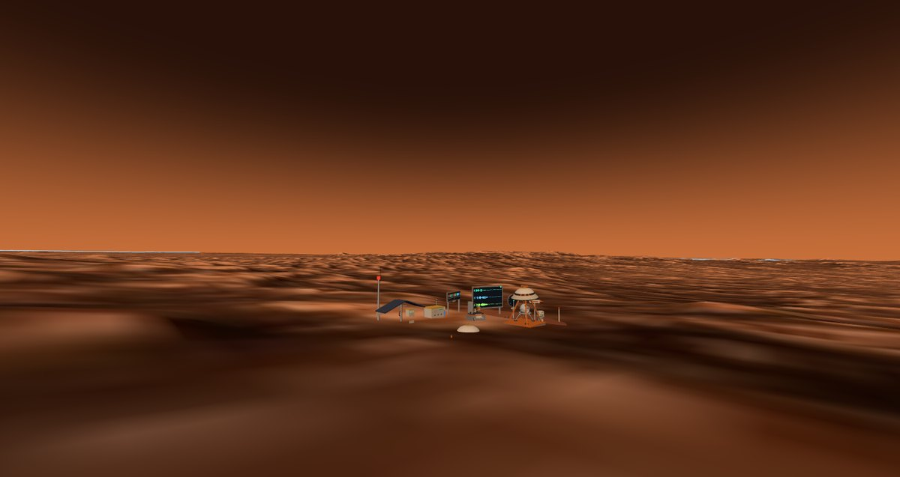